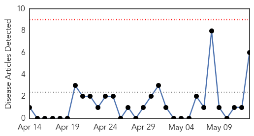
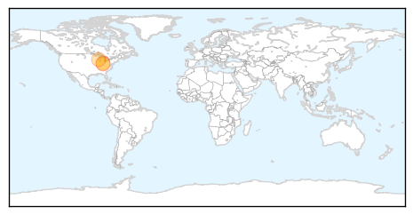

Cholera
30-Day Web Trend
0 alerts, 0 warnings

30-Day Twitter Trend
2 alerts, 0 warnings

Article Locations

Article Confidences

Top Articles:
- 0.991
- (UPDATE) 7 dead in cholera outbreak in Cotabato
- 0.919
- Suspected cholera outbreak kills 12, downs 200 in North Cotabato
- 0.919
- Suspected cholera outbreak kills 12, downs 200 in North Cotabato
- 0.908
- IOM Conducts First Mass Oral Cholera Vaccination Campaign in South Sudan
- 0.808
- Cholera kills 5, downs 103 in N. Cotabato town
- 0.802
- Nation, News, The Philippine Star
Top Tweets:
-
No tweets found for May 13, 2014
Mumps
30-Day Web Trend
1 alerts, 0 warnings
30-Day Twitter Trend
0 alerts, 0 warnings

Article Locations
Article Confidences

Top Articles:
Top Tweets:
-
No tweets found for May 13, 2014